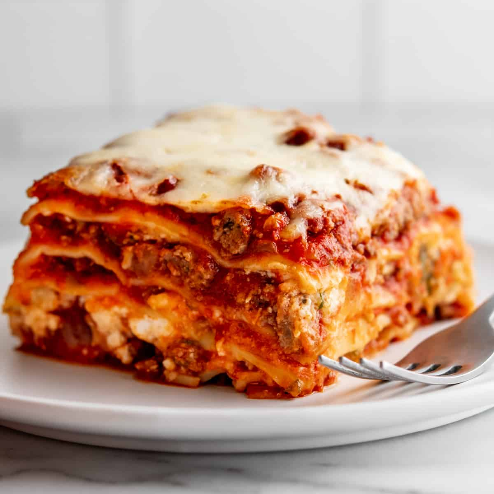

Lasagna

Description
This lasagna recipe takes a little work, but it is so satisfying and filling that it's worth it!
Ingredients
Macaroni: This homemade mac and cheese starts with a box of uncooked macaroni noodles.
Butter and flour: You'll need butter and flour to make a roux for the cheese sauce. You'll also need two tablespoons of butter for the topping.
Milk: Use whole milk for the richest flavor and texture.
Cheese: This baked mac and cheese recipe calls for Cheddar and Parmesan cheeses.
Bread crumbs: Use store-bought dried bread crumbs or
How to prepare Mac and cheese
-
Boil the noodles, drain, and transfer to a prepared baking dish.
-
Make the cheese sauce, pour the sauce over the noodles, and stir.
-
Make the topping, spread it over macaroni and cheese, and sprinkle with paprika.
-
Bake the mac and cheese until the topping is golden brown.
Back to recipes